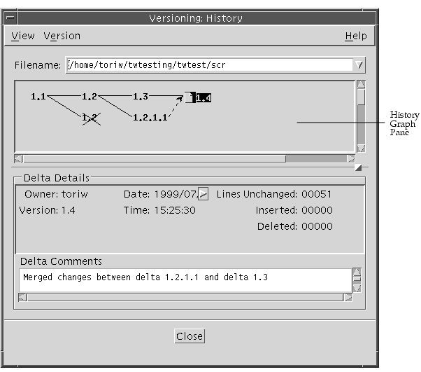
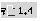
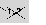
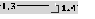
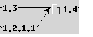
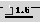
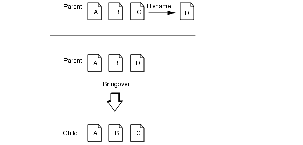
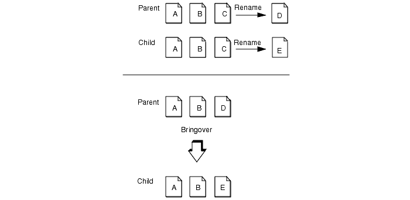
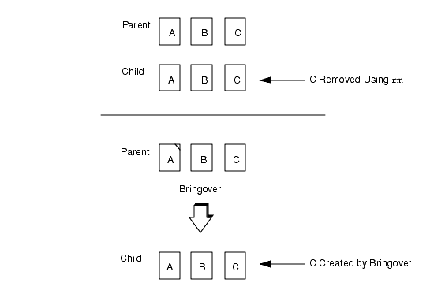
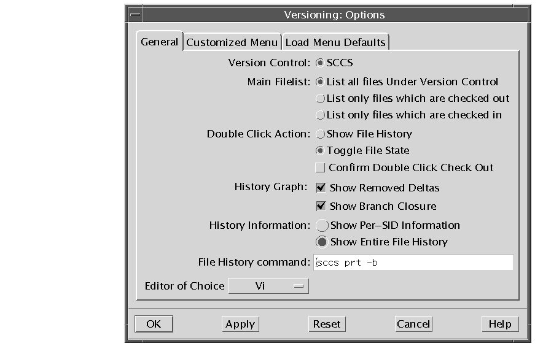

| Sun WorkShop TeamWare User's Guide |
Advanced File Management
This chapter shows you how to perform advanced file management, including:
- Updating the Files in Your Workspace
- Viewing File History
- Renaming, Moving, or Deleting Files
- Creating a Customized Menu
- Adding a Path to the Load Menu
- Changing Versioning Properties
- Setting SCCS File Properties
Updating the Files in Your Workspace
Once you have created a workspace, you need to update it regularly using the Bringover transaction.
1. In the Configuring Window, choose ActionsBringover Update.
2. Click the Bringover Update tab in the Transactions dialog box.3. Confirm that the parent and child workspace directories are correct.4. Select the directories and files to update.5. Click Bringover.For a detailed explanation of how to perform this transaction, see Updating a Child Workspace (Bringover Update).
Viewing File History
Versioning allows you to visually peruse the history of a file in a Sun WorkShop TeamWare workspace. This way, you can see who made changes to a file, when the changes were made, and (with good comments) why changes were made.
The History window (see FIGURE 7-1) displays an illustration of delta branches for a selected file. This history graph allows you to peruse the delta structure of a file and assess associations between versions. Dashed lines are shown by default and indicate that the delta to the right of the dashed line was created by including the changes from the delta on the left. Following the dashed line provides you with a time-ordering sequence.
Using the History window, you can:
- Select a delta from the history graph that will display information about the delta in the Delta Details pane.
- Select a delta from the history graph to check it in or out, depending on its current SCCS state.
- View the contents of a selected delta by choosing View
- Select two deltas and choose View
- Select two deltas and choose View
diffscommand.- Select two deltas and choose View
diffs-ccommand.To view the history of a file:
1. In the Versioning Window, click a file to select it.2. Choose File
- This displays the File History Window (see FIGURE 7-1).
3. When you want to view another delta of the same file, click a delta (represented by a number, for example, 1.2) in the History Graph pane.
FIGURE 7-1 File History WindowFile History Window
TABLE 7-1 describes the items in the File History window:File History Viewer Symbols
TABLE 7-2 lists the symbols you can see in the File History Viewer window.
TABLE 7-2 File History Viewer Symbols  A file icon to the left of the version number indicates the default delta. A red check mark indicates the file is checked out.  Crossed out deltas are unmerged.  Solid lines represent the default deltas path.  Dotted lines with an arrow represent merged branches.  Double underline indicates the default branch (set by the sccs-adminflag-d). See Setting SCCS File Properties.
How To Read a File's History: Deltas, Branches and Versions
The Versioning tool keeps track of the various versions of a file for the entire life of the file. Each time you check a file in, Versioning records the line-by-line differences between the file you check in and the previous version of the file. This line-by-line difference is known as a delta.
When you check a file in to Sun WorkShop TeamWare for the first time, it is numbered 1.1 (by default). Successive deltas are numbered 1.2, 1.3, and so forth. The straight progression from 1.1, 1.2, 1.3, etc. is know as the trunk of an SCCS tree. There are times, however, when it is necessary to create an alternative branch off of the trunk. Branches are used to allow you to develop two different versions of the same file in parallel, often for bug fixes in source code. Branches are numbered from where they split off from the tree, for example, 1.2.1.1.
An SCCS delta ID (SID) is the number used to represent a specific delta. This is a two-part number, with the parts separated by a dot (.). The SID of the initial delta is 1.1 by default. The first part of the SID is referred to as the release number, and the second, the level number. When you check in a delta, the level number is increased automatically. The SID for a branch delta consists of four parts: the release and level numbers and the branch and sequence numbers, or release.level.branch.sequence. The branch number is assigned to each branch that is a descendant of a particular trunk delta; the first branch is 1, the next 2, and so on. The sequence number is assigned, in order, to each delta on a particular branch. Thus, 1.2.1.1 identifies the first delta of the first branch derived from delta 1.2. A second branch to this delta would be numbered 1.2.2.1 and so on.
The concepts of branching can be extended to any delta in the tree. The branch component is assigned in the order of creation on the branch, independent of its location relative to the trunk. Thus, a branch delta can always be identified from its name. While the trunk delta can be identified from the branch delta's name, it is not possible to determine the entire path leading from the trunk delta to the branch delta.
For example, if delta 1.3 has one branch, all deltas on that branch will be named 1.3.n. If a delta on this branch has another branch emanating from it, all deltas on the new branch will be named 1.3.2.n. The only information that can be derived from the name of delta 1.3.2.2 is that it is the second chronological delta on the second chronological branch whose trunk ancestor is delta 1.3. In particular, it is not possible to determine from the name of delta 1.3.2.2 all of the deltas between it and its trunk ancestor (1.3).
The terms delta and version are often used synonymously; however, their meanings are not the same. Versioning constructs a version of a file from a set of accumulated deltas. It is possible to retrieve a version of a file that omits certain deltas.
Merging Deltas
There are times when it makes sense to continue development in parallel, and there are times when it makes sense to merge changes back into the main trunk. Once you have merged the files, this is known as a branch closure.
1. Start Versioning and select the working directory.2. Choose Commands3. Choose File4. Select two deltas from the graph in the History window.5. To inspect the differences, choose one of the following:6. Make changes to the file.7. Add necessary comments.8. Choose CommandsRenaming, Moving, or Deleting Files
When you rename, move, or delete files, Configuring tracks those changes and manages the altered files during Bringover and Putback transactions. Although Configuring processes these files automatically, it is helpful for you to understand some of the ramifications of renaming, moving, or deleting files.
Note – The best way to delete and rename files is to use the Move and Delete commands from the TeamWare Versioning menu, rather than with the Common Desktop Environment (CDE) FileManager or the SunOS operating system commandsmvorrm. Using the procedures detailed below will maintain the correct relationships between files and accurate file histories.
Renaming or Moving Files
When you bring over or put back files that you (or another user) have renamed or moved, Configuring must determine whether the files have been newly created or whether they existed previously and have been renamed or moved. When you rename or move a file, Configuring updates both the file name and history file for that file. Configuring propagates the name change throughout the workspace hierarchy using the same rules used with file content updates and conflicts.
During transactions, Configuring processes files individually. When you rename or move a directory, each file in the directory is evaluated separately as if each had been renamed or moved individually.
Example
In FIGURE 7-2, the name of file C in the parent is changed to D. When Configuring brings the file over to the child, it must determine which of the following is true:

- D has been newly created in the parent.
- It is the same file as C in the child, only with a new name.
FIGURE 7-2 File "C" Renamed to "D"If the same case was the subject of a Putback operation, the same problem would apply: Is "C" new in the child, or has it been renamed from some other file?
The action that Configuring takes is very different in each case. If it is a new file in the parent, Configuring creates it in the child; if it has been renamed in the parent, Configuring renames file "C" to "D" in the child.
Configuring stores information in the SCCS history files that enables it to identify files even if their names are changed. You may have noticed the following message when viewing Bringover and Putback output:
Configuring examines all files involved in a Bringover Update or Putback transaction for potential rename conditions before it begins to propagate files.
When Configuring encounters renamed files, it propagates the name change to the child in the case of Bringover, and to the parent in the case of Putback. You are informed of the change in the Transaction Output window with the following message:
Name History
Configuring stores information about a file's name history in its SCCS history file. The name history is a list of the workspace-relative names that have been given to the file during its lifetime. This information is used by Configuring to differentiate between files that have been renamed and those that are new. When you rename a file, Configuring updates the file's name history during the next Bringover or Putback transaction that includes it. When a name history is updated, you are notified in the Transaction Output window.
Rename Conflicts
In rare cases, a file's name is changed concurrently in parent and child workspaces. This is referred to as a rename conflict. For example in FIGURE 7-3, the name of file "C" is changed to "D" in the parent, and concurrently to "E" in the child.

FIGURE 7-3 File "C" is Concurrently Renamed in both Parent and Child Workspaces.When this occurs, Configuring determines that both "D" in the parent and "E" in the child are actually the same file, but with different names. In the case of rename conflicts:
- Configuring reports the conflict using the name of the file in the child.
- Configuring always resolves the conflict by automatically changing the name of the file in the child workspace to the current (renamed) name in the parent. The name of the file from the parent is always chosen, even in the case of a Putback transaction.
When Configuring encounters a rename conflict, you are notified in the Transaction Output window with the following message:
Deleting Files
Deleting files from a Configuring workspace is a little trickier than it first appears. Deleting a file from a workspace with something other than Sun WorkShop TeamWare commands causes Configuring to determine that the file has been newly created in the workspace's parent or child.
In the example in FIGURE 7-4, the file "C" is removed from the child workspace using the SunOS operating system command
rm; later the Bringover Update transaction is used to update the child.
FIGURE 7-4 File "C" is Removed From the Child Using thermCommand, Then Recreated by Bringover.Configuring examines the two workspaces and determines that the file "C" exists in the parent and not in the child -- following the usual Configuring rules, it creates "C" in the child.
Always use Sun WorkShop TeamWare commands to delete files and workspaces.
Deleting a Sun WorkShop TeamWare File
Use this procedure to delete files, rather than using operating system commands. This procedure will maintain the relationships and history of the files.
To delete a Sun WorkShop TeamWare file:
1. Start Versioning.2. Click on a file.3. Choose Workspaces4. Click OK.
- Rather than actually deleting the file, Versioning moves the file to a
deleted_filesdirectory. This change gets propagated throughout the workspace hierarchy as a rename, "deleting" the file in all workspaces.Using this procedure, you don't have to worry about a file reappearing after you have deleted it (see Deleting Files).
Creating a Customized Menu
In Versioning, you can create your own pull-down menu to access other programs or frequently used commands.
1. In the Configuring window, choose TeamWare2. In the Versioning window, choose View3. Click the Customized Menu tab.4. In the Customized Menu tab, type the full path name of the command. For example:
/bin/grepSun WorkShop TeamWare provides two macros to use as arguments to the command:
ARGandFILE.
/bin/grep $ARGS $FILES5. Type the name you want to appear in the menu in the Menu Label box.6. Check the Output Window check box if you want to see the output from your command.7. Check the Prompt Window check box if you want to prompt the user for input.8. Type the text you want to appear in the prompt window in the Prompt box.9. Click Add to add the menu item to the list.10. Click Test to test your command.11. Click OK.A new menu titled "Customized" appears in the Versioning window. The command that you have added is on this menu.
Adding a Path to the Load Menu
Some projects have a complex structure, and it becomes burdensome to click down several directories or type a long path to get to the files you regularly work with. Instead, you can add a directory to the File
To add a directory to the Load menu:
1. In the Configuring window, choose TeamWare2. In the Versioning window, choose View3. In the Pathname text box, type the full path name of the directory.
- For example:
/set/pubs/Work/Workspaces/TAZ/IntA/sig_team4. In the Menu Label text box, type the name you want to appear on the Load menu.
sigteam
5. Click Add.
- The menu label appears in the Load Menu Defaults tab.
6. Click OK.Your menu label is now on the File
Changing Versioning Properties

- You can use the Options dialog box (see FIGURE 7-5) to set the Versioning properties. To open the Options dialog box, choose View
FIGURE 7-5 Versioning Options Dialog BoxTABLE 7-3 describes the items in the General tab in the Versioning Options dialog box
.Setting SCCS File Properties
Use the SCCS File Properties dialog box to change SCCS flags. These are options to the
SCCS-admincommand. You can learn more about SCCS file properties by reading the Solaris Programming Utilities Guide or with the commandman sccs-admin.1. In the Versioning Window, select a single file.2. Choose File3. Set any of the properties in the SCCS File Properties dialog box.
- TABLE 7-4 describes the items in the File Properties dialog box.
TABLE 7-4 SCCS File Properties Force Encoding
(`e' flag)This field is read only. Values are Yes and No. Treatment of `No id keywords'
(`i' flag)Tells SCCS to issue either an error or a warning when it encounters a file with no id keywords. Empty Releases
(`n' flag)Creates empty releases when releases are skipped. Values are Allowed and Not Allowed. Branch Deltas
(`b' flag)Enables branch deltas. Values are Enabled and Disabled. Concurrent Updates
(`j' flag)Allows concurrent updates. Values are Allowed and Not Allowed. Ceiling on the Releases
(`c' flag)Sets a ceiling on the number of releases that can be checked out. Type a number from 1 to 9999. The default is 9999. Floor on the Releases
(`f' flag)Sets a floor on the number of releases that can be checked out. Type a number from 1 to 9999. The default is 1. Default SID
(`d' flag)Sets a default delta number, or SID. For example, you could enter 1.6. For a description of SIDs, see How To Read a File's History: Deltas, Branches and Versions. Lock Releases
(`l' flag)Locks the release against deltas. Any attempt to check out and edit the file will fail. Type a release number or list of release numbers separated by commas. (For example: 2.1, 2.1.3). `Q' Keyword Value
(`q' flag)Sets a value for a keyword when the file is opened read-only. Module Name
(`m' flag)Sets a value for the module name keyword. The default is the SCCS file name with the leading s removed. Module Type
(`t' flag)Sets a value for the module type. Validation Program
(`v' flag)Sets a validation program for the MR (Modification Request) numbers associated with a new delta. When you attempt to check in the file, Versioning will prompt you for an MR for the file and pass the MR to the validation program. If the validation program is successful, then the check in is allowed.
|
Sun Microsystems, Inc. Copyright information. All rights reserved. Feedback |
Library | Contents | Previous | Next | Index |